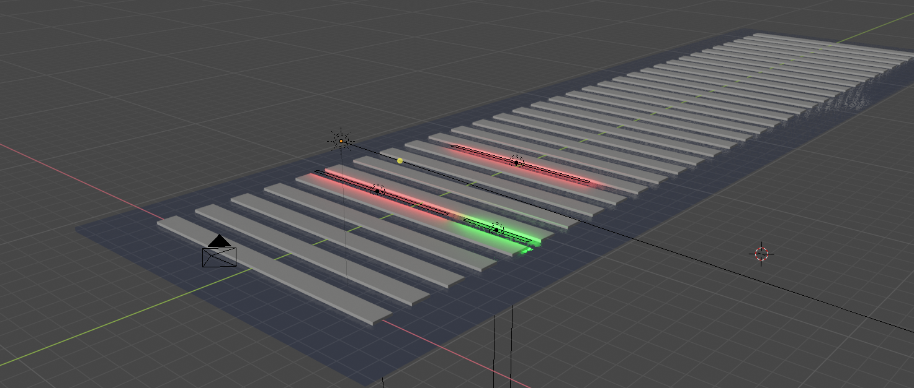

Assignment
A New Playful Interaction Concept
There are a few things that come to mind when designing for a playful interaction, and the first of those is location. In this scenario I am thinking of a social playful interface to encourage positive behaviour within the main THUAS building. Students start their journey to the THAUS building from either Hollands Spoor or from another route to the main entrance. All the students that come from Hollands Spoor station already need to navigate themselves through the clumsy concrete slabs with water between the gaps, which requires some mental effort on itself. Since there already is some mental effort at play in this situation, this would be an great starting-point from which to design the concept.
Now in terms of inputs and outputs, the most accessible ones are those that are already in action. In this case that means the concrete slabs and the water between them. The concrete slabs and the water between it could be used as inputs, with the output being somewhere in the main building. That way the original experience stays the same for users that don’t want to participate.
But what is the game? I personally feel like walking to school is one of the most individualistic aspects of a day at school, so why not socialize that? When students start walking on the slabs, a little led light might light up under the water in front of themselves. This indicates where the users can or can't walk, kind of like a "the floor is lava" concept. With multiple sensors and leds placed in the water-gaps, players from left to right can join the game and join the competetition, in a multiplayer comparing fashion. When they arrive in the main building they can watch their score, and even improve it! Maybe they lost by 100 points, and can make these up by following the lights on the sets of stairs in the main hall. There can be a monitor on the lighthouses that displays the scores, and make this game accessible and fun for everyone that wants to participate.
Research
Ik vertel hier verder in het Nederlands. Wat ik nou een heel leuk voorbeeld vind van een playful interface is de piano op Utrecht Centraal. Misschien een gek voorbeeld, er is namelijk wel een hele directe relatie tussen input en output, maar er kunnen hele leuke situaties ontstaan. Op Utrecht centraal zat ik piano te spelen toen er iemand aankwam met haar Cello. Wij hebben toen een kwartier vol plezier met z'n 2en gespeeld, waarna er ook nog een gitarist bij kwam. Er was sprake van een multiplayer cooperatief spel, waarbij we ons eigen object gebruikte, maar samen richting een doel werkte, namelijk om plezier te hebben.
Reflect